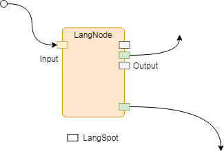
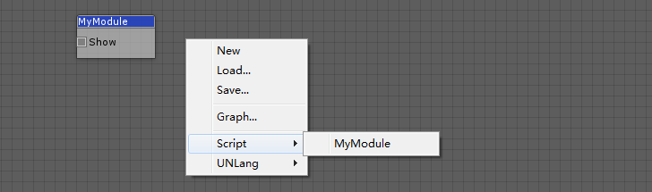

UNLang节点（LangNode）是基础对象。UNLang所有可视化节点都需要继承自UNLang节点。
什么是LangNode
LangNode就像一个带有输入/输出的电子元件。信号触发输入管脚，然后整个LangNode开始运行。在LangNode运行中或者结束时，可以触发输出管脚信号。

LangSpot
LangSpot是节点的管脚。 一个自定义模块应该定义有多少个输入或者输出 管脚. 这样UNLang就可以在编辑器中可视化显示这个模块，并标准化模块的操作。
public sealed class LangSpot |
| 参数 | 描述 |
|---|---|
name |
LangSpot名字。 |
category |
连接类型。详细请查看LangType.Category。 |
owner |
LangSpot所有者，一般都是this。 |
capacity |
这个LangSpot同时能连接的最多数量连线。 |
type |
LangSpot类型。它可以是In（输入）或者Out（输出）。 |
NodeInterface
使用NodeInterface属性，使用者可以定义模块在UNLang编辑器中的可视化结果。
注意:
NodeInterface是一个模块的必选项。
实现你的模块
LangNode和LangSpot标准化了一个模块的基本组件和操作。
让我们用UnityEngine.Debug在UNLang中实现一个基础模块，用来显示一个字符串Hello UNLang!。
[] |
使用者需要做：
- 首先，重写
Init方法来定义这个模块的LangSpot。例子代码定义了一个
LangSpot。Show是这个LangSpot的名字；Any意味着这个LangSpot可以连接上游输入的任何类型数据信号；this是这个LangSpot的宿主；-1意味着它可以同时连接任意数量的连线；In意味着它是一个输入类型的管脚。 - 第二步，在
OnSignal方法中处理逻辑。例子代码检查了管脚类型是否是
In，然后在console窗口中输出Hello UNLang!。 - 最后，使用
NodeInterface属性定义模块在UNLang编辑器的名称和分组。例子代码定义模块名称为
MyModule，并且在Script分组菜单下。
下图就是MyModule在UNLang编辑器中的效果：
